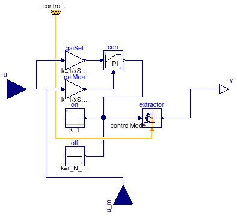
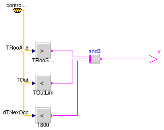
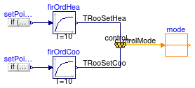

| Name | Description |
|---|---|
| Empty control bus that is adapted to the signals connected to it | |
| Economizer | Controller for economizer |
| Example models to test the components | |
| Controller for fan revolution | |
| IntegerSum | Sums all the integer signals |
| ModeSelector | Finite State Machine for the operational modes |
| OperationModes | Enumeration for modes of operation |
| PreCoolingStarter | Outputs true when precooling should start |
| RoomTemperatureSetpoint | Set point scheduler for room temperature |
| RoomVAV | Controller for room VAV box |
| State | Block that outputs the mode if the state is active, or zero otherwise |
| UnoccupiedOn | Controller for unoccupied on state |
| DuctStaticPressureSetpoint | Computes the duct static pressure setpoint |
| CoolingCoilTemperatureSetpoint | Set point scheduler for cooling coil |
| MixedAirTemperatureSetpoint | Mixed air temperature setpoint for economizer |
| EconomizerTemperatureControl | Controller for economizer mixed air temperature |
type OperationModes = enumeration(
occupied "Occupied",
unoccupiedOff "Unoccupied off",
unoccupiedNightSetBack "Unoccupied, night set back",
unoccupiedWarmUp "Unoccupied, warm-up",
unoccupiedPreCool "Unoccupied, pre-cool",
safety "Safety (smoke, fire, etc.)") "Enumeration for modes of operation";
This connector defines the "expandable connector" ControlBus that is used as bus in the BusUsage example. Note, this connector is "empty". When using it, the actual content is constructed by the signals connected to this bus.
Extends from Modelica.Icons.SignalBus (Icon for signal bus).
expandable connector ControlBus "Empty control bus that is adapted to the signals connected to it" extends Modelica.Icons.SignalBus;end ControlBus;
| Type | Name | Default | Description |
|---|---|---|---|
| TemperatureDifference | dT | 1 | Temperture offset to activate economizer [K] |
| VolumeFlowRate | VOut_flow_min | Minimum outside air volume flow rate [m3/s] | |
| Real | k | 1 | Gain of controller |
| Time | Ti | Time constant of Integrator block [s] |
| Type | Name | Description |
|---|---|---|
| input RealInput | TSupHeaSet | Supply temperature setpoint for heating |
| input RealInput | TSupCooSet | Supply temperature setpoint for cooling |
| input RealInput | TMix | Measured mixed air temperature |
| ControlBus | controlBus | |
| input RealInput | VOut_flow | Measured outside air flow rate |
| input RealInput | TRet | Return air temperature |
| output RealOutput | yOA | Control signal for outside air damper |
block Economizer "Controller for economizer"
import Buildings.Examples.VAVReheat.Controls.OperationModes;
parameter Modelica.SIunits.TemperatureDifference dT(min=0.1)= 1
"Temperture offset to activate economizer";
parameter Modelica.SIunits.VolumeFlowRate VOut_flow_min(min=0)
"Minimum outside air volume flow rate";
Modelica.Blocks.Interfaces.RealInput TSupHeaSet
"Supply temperature setpoint for heating";
Modelica.Blocks.Interfaces.RealInput TSupCooSet
"Supply temperature setpoint for cooling";
Modelica.Blocks.Interfaces.RealInput TMix "Measured mixed air temperature";
ControlBus controlBus;
Modelica.Blocks.Interfaces.RealInput VOut_flow
"Measured outside air flow rate";
Modelica.Blocks.Interfaces.RealInput TRet "Return air temperature";
Modelica.Blocks.Math.Gain gain(k=1/VOut_flow_min) "Normalize mass flow rate";
Buildings.Controls.Continuous.LimPID conV_flow(
controllerType=Modelica.Blocks.Types.SimpleController.PI,
k=k,
Ti=Ti,
yMax=0.995,
yMin=0.005,
Td=60) "Controller for outside air flow rate";
Modelica.Blocks.Sources.Constant uni(k=1) "Unity signal";
parameter Real k=1 "Gain of controller";
parameter Modelica.SIunits.Time Ti "Time constant of Integrator block";
Modelica.Blocks.Interfaces.RealOutput yOA
"Control signal for outside air damper";
Modelica.Blocks.Routing.Extractor extractor(nin=6);
Modelica.Blocks.Sources.Constant closed(k=0) "Signal to close OA damper";
Modelica.Blocks.Math.Max max
"Takes bigger signal (OA damper opens for temp. control or for minimum outside air)";
MixedAirTemperatureSetpoint TSetMix "Mixed air temperature setpoint";
EconomizerTemperatureControl yOATMix(Ti=Ti, k=k)
"Control signal for outdoor damper to track mixed air temperature setpoint";
EconomizerTemperatureControl yOATFre(Ti=Ti, k=k)
"Control signal for outdoor damper to track freeze temperature setpoint";
Modelica.Blocks.Math.Min min
"Takes bigger signal (OA damper opens for temp. control or for minimum outside air)";
Modelica.Blocks.Sources.Constant TFre(k=273.15 + 3)
"Setpoint for freeze protection";
equation
connect(VOut_flow, gain.u);
connect(gain.y, conV_flow.u_m);
connect(uni.y, conV_flow.u_s);
connect(controlBus.controlMode, extractor.index);
connect(max.y, extractor.u[OperationModes.occupied]);
connect(closed.y, extractor.u[OperationModes.unoccupiedOff]);
connect(closed.y, extractor.u[OperationModes.unoccupiedNightSetBack]);
connect(max.y, extractor.u[OperationModes.unoccupiedWarmUp]);
connect(max.y, extractor.u[OperationModes.unoccupiedPreCool]);
connect(closed.y, extractor.u[OperationModes.safety]);
connect(TSupHeaSet, TSetMix.TSupHeaSet);
connect(TSupCooSet, TSetMix.TSupCooSet);
connect(controlBus, TSetMix.controlBus);
connect(yOATMix.TRet, TRet);
connect(controlBus.TOut, yOATMix.TOut);
connect(yOATMix.TMix, TMix);
connect(yOATMix.TMixSet, TSetMix.TSet);
connect(yOATMix.yOA, max.u1);
connect(min.u2, conV_flow.y);
connect(min.y, max.u2);
connect(min.u1, yOATFre.yOA);
connect(yOATFre.TRet, TRet);
connect(controlBus.TOut, yOATFre.TOut);
connect(yOATFre.TMix, TMix);
connect(TFre.y, yOATFre.TMixSet);
connect(extractor.y, yOA);
end Economizer;

| Type | Name | Default | Description |
|---|---|---|---|
| Real | xSet_nominal | Nominal setpoint (used for normalization) | |
| Real | r_N_min | 0.01 | Minimum normalized fan speed |
| Init | initType | Modelica.Blocks.Types.Init.N... | Type of initialization (1: no init, 2: steady state, 3/4: initial output) |
| Real | y_start | 0 | Initial or guess value of output (= state) |
| Type | Name | Description |
|---|---|---|
| input RealInput | u | Connector of Real input signal |
| output RealOutput | y | Connector of Real output signal |
| ControlBus | controlBus | |
| input RealInput | u_m | Connector of measurement input signal |
block FanVFD "Controller for fan revolution" extends Modelica.Blocks.Interfaces.SISO; import Buildings.Examples.VAVReheat.Controls.OperationModes;Buildings.Controls.Continuous.LimPID con( yMax=1, yMin=0, controllerType=Modelica.Blocks.Types.SimpleController.PI, Td=60, k=0.5, Ti=15) "Controller"; Modelica.Blocks.Math.Gain gaiMea(k=1/xSet_nominal) "Gain to normalize measurement signal"; parameter Real xSet_nominal "Nominal setpoint (used for normalization)";ControlBus controlBus; Modelica.Blocks.Routing.Extractor extractor(nin=6); Modelica.Blocks.Sources.Constant off(k=r_N_min) "Off signal"; Modelica.Blocks.Sources.Constant on(k=1) "On signal"; Modelica.Blocks.Math.Gain gaiSet(k=1/xSet_nominal) "Gain to normalize setpoint signal"; Modelica.Blocks.Interfaces.RealInput u_m "Connector of measurement input signal"; parameter Real r_N_min=0.01 "Minimum normalized fan speed"; parameter Modelica.Blocks.Types.Init initType=Modelica.Blocks.Types.Init.NoInit "Type of initialization (1: no init, 2: steady state, 3/4: initial output)"; parameter Real y_start=0 "Initial or guess value of output (= state)"; equationconnect(gaiMea.y, con.u_m); connect(con.y, extractor.u[OperationModes.occupied]); connect(con.y, extractor.u[OperationModes.unoccupiedWarmUp]); connect(con.y, extractor.u[OperationModes.unoccupiedPreCool]); connect(off.y, extractor.u[OperationModes.unoccupiedOff]); connect(off.y, extractor.u[OperationModes.safety]); connect(on.y, extractor.u[OperationModes.unoccupiedNightSetBack]); connect(controlBus.controlMode, extractor.index); connect(gaiSet.y, con.u_s); connect(u_m, gaiMea.u); connect(gaiSet.u, u); connect(extractor.y, y); end FanVFD;
| Type | Name | Default | Description |
|---|---|---|---|
| Integer | nin | Number of inputs |
| Type | Name | Description |
|---|---|---|
| output IntegerOutput | y | Connector of Integer output signal |
| input IntegerInput | u[nin] | Input signal |
block IntegerSum "Sums all the integer signals" extends Modelica.Blocks.Interfaces.IntegerSO; parameter Integer nin "Number of inputs";Modelica.Blocks.Interfaces.IntegerInput u[nin] "Input signal"; equation y = sum(u);end IntegerSum;
| Type | Name | Default | Description |
|---|---|---|---|
| TemperatureDifference | delTRooOnOff | 1 | Deadband in room temperature between occupied on and occupied off [K] |
| Temperature | TRooSetHeaOcc | 293.15 | Set point for room air temperature during heating mode [K] |
| Temperature | TRooSetCooOcc | 299.15 | Set point for room air temperature during cooling mode [K] |
| Temperature | TSetHeaCoiOut | 303.15 | Set point for air outlet temperature at central heating coil [K] |
| Type | Name | Description |
|---|---|---|
| ControlBus | cb |
model ModeSelector "Finite State Machine for the operational modes"Modelica.StateGraph.InitialStep initialStep; Modelica.StateGraph.Transition start "Starts the system"; State unOccOff( mode=Buildings.Examples.VAVReheat.Controls.OperationModes.unoccupiedOff, nIn=3, nOut=4) "Unoccupied off mode, no coil protection"; State unOccNigSetBac( nOut=2, mode=Buildings.Examples.VAVReheat.Controls.OperationModes.unoccupiedNightSetBack, nIn=1) "Unoccupied night set back"; Modelica.StateGraph.Transition t2(condition=TRooMinErrHea.y > 0, enableTimer=true, waitTime=60); parameter Modelica.SIunits.TemperatureDifference delTRooOnOff(min=0.1)=1 "Deadband in room temperature between occupied on and occupied off"; parameter Modelica.SIunits.Temperature TRooSetHeaOcc=293.15 "Set point for room air temperature during heating mode"; parameter Modelica.SIunits.Temperature TRooSetCooOcc=299.15 "Set point for room air temperature during cooling mode"; parameter Modelica.SIunits.Temperature TSetHeaCoiOut=303.15 "Set point for air outlet temperature at central heating coil";Modelica.StateGraph.Transition t1(condition=delTRooOnOff < -TRooMinErrHea.y); inner Modelica.StateGraph.StateGraphRoot stateGraphRoot; ControlBus cb; Modelica.Blocks.Routing.RealPassThrough TRooSetHea "Current heating setpoint temperature"; State morWarUp(mode=Buildings.Examples.VAVReheat.Controls.OperationModes.unoccupiedWarmUp, nIn=2, nOut=1) "Morning warm up"; Modelica.StateGraph.TransitionWithSignal t6(enableTimer=true, waitTime=60); Modelica.Blocks.Logical.LessEqualThreshold occThrSho(threshold=1800) "Signal to allow transition into morning warmup"; Modelica.StateGraph.TransitionWithSignal t5; State occ( mode=Buildings.Examples.VAVReheat.Controls.OperationModes.occupied, nIn=3) "Occupied mode"; Modelica.Blocks.Routing.RealPassThrough TRooMin; Modelica.Blocks.Math.Feedback TRooMinErrHea "Room control error for heating"; Modelica.StateGraph.Transition t3(condition=TRooMin.y > TRooSetHeaOcc or occupied.y); Modelica.Blocks.Routing.BooleanPassThrough occupied "outputs true if building is occupied"; Modelica.StateGraph.TransitionWithSignal t4(enableTimer=false); State morPreCoo( nIn=2, mode=Buildings.Examples.VAVReheat.Controls.OperationModes.unoccupiedPreCool, nOut=1) "Pre-cooling mode"; Modelica.StateGraph.Transition t7(condition=TRooMin.y < TRooSetCooOcc or occupied.y); Modelica.Blocks.Logical.And and1; Modelica.Blocks.Routing.RealPassThrough TRooAve "Average room temperature"; Modelica.Blocks.Sources.BooleanExpression booleanExpression(y=TRooAve.y < TRooSetCooOcc); PreCoolingStarter preCooSta(TRooSetCooOcc=TRooSetCooOcc) "Model to start pre-cooling"; Modelica.StateGraph.TransitionWithSignal t9; Modelica.Blocks.Logical.Not not1; Modelica.Blocks.Logical.And and2; Modelica.Blocks.Logical.Not not2; Modelica.StateGraph.TransitionWithSignal t8 "changes to occupied in case precooling is deactivated"; Modelica.Blocks.MathInteger.Sum sum(nu=5); equationconnect(start.outPort, unOccOff.inPort[1]); connect(initialStep.outPort[1], start.inPort); connect(unOccOff.outPort[1], t2.inPort); connect(t2.outPort, unOccNigSetBac.inPort[1]); connect(unOccNigSetBac.outPort[1], t1.inPort); connect(t1.outPort, unOccOff.inPort[2]); connect(cb.dTNexOcc, occThrSho.u); connect(t6.outPort, morWarUp.inPort[1]); connect(t5.outPort, morWarUp.inPort[2]); connect(unOccNigSetBac.outPort[2], t5.inPort); connect(cb.TRooMin, TRooMin.u); connect(TRooSetHea.y, TRooMinErrHea.u1); connect(TRooMin.y, TRooMinErrHea.u2); connect(unOccOff.outPort[2], t6.inPort); connect(morWarUp.outPort[1], t3.inPort); connect(cb.occupied, occupied.u); connect(occ.outPort[1], t4.inPort); connect(t4.outPort, unOccOff.inPort[3]); connect(occThrSho.y, and1.u1); connect(and1.y, t6.condition); connect(and1.y, t5.condition); connect(cb.TRooAve, TRooAve.u); connect(booleanExpression.y, and1.u2); connect(preCooSta.y, t9.condition); connect(t9.outPort, morPreCoo.inPort[1]); connect(unOccOff.outPort[3], t9.inPort); connect(cb, preCooSta.controlBus); connect(morPreCoo.outPort[1], t7.inPort); connect(t7.outPort, occ.inPort[2]); connect(t3.outPort, occ.inPort[1]); connect(occThrSho.y, not1.u); connect(not1.y, and2.u2); connect(and2.y, t4.condition); connect(occupied.y, not2.u); connect(not2.y, and2.u1); connect(cb.TRooSetHea, TRooSetHea.u); connect(t8.outPort, occ.inPort[3]); connect(unOccOff.outPort[4], t8.inPort); connect(occupied.y, t8.condition); connect(morPreCoo.y, sum.u[1]); connect(morWarUp.y, sum.u[2]); connect(occ.y, sum.u[3]); connect(unOccOff.y, sum.u[4]); connect(unOccNigSetBac.y, sum.u[5]); connect(sum.y, cb.controlMode); end ModeSelector;

| Type | Name | Default | Description |
|---|---|---|---|
| Temperature | TOutLim | 286.15 | Limit for activating precooling [K] |
| Temperature | TRooSetCooOcc | Set point for room air temperature during cooling mode [K] |
| Type | Name | Description |
|---|---|---|
| output BooleanOutput | y | Connector of Boolean output signal |
| ControlBus | controlBus |
block PreCoolingStarter "Outputs true when precooling should start"
extends Modelica.Blocks.Interfaces.BooleanSignalSource;
parameter Modelica.SIunits.Temperature TOutLim = 286.15
"Limit for activating precooling";
parameter Modelica.SIunits.Temperature TRooSetCooOcc
"Set point for room air temperature during cooling mode";
ControlBus controlBus;
Modelica.Blocks.Logical.GreaterThreshold greater(threshold=TRooSetCooOcc);
Modelica.Blocks.Logical.LessThreshold greater2(threshold=1800);
Modelica.Blocks.Logical.LessThreshold greater1(threshold=TOutLim);
Modelica.Blocks.MathBoolean.And and3(nu=3);
equation
connect(controlBus.dTNexOcc, greater2.u);
connect(controlBus.TRooAve, greater.u);
connect(controlBus.TOut, greater1.u);
connect(and3.y, y);
connect(greater.y, and3.u[1]);
connect(greater1.y, and3.u[2]);
connect(greater2.y, and3.u[3]);
end PreCoolingStarter;

| Type | Name | Default | Description |
|---|---|---|---|
| Temperature | THeaOn | 293.15 | Heating setpoint during on [K] |
| Temperature | THeaOff | 285.15 | Heating setpoint during off [K] |
| Temperature | TCooOn | 297.15 | Cooling setpoint during on [K] |
| Temperature | TCooOff | 303.15 | Cooling setpoint during off [K] |
| Type | Name | Description |
|---|---|---|
| ControlBus | controlBus |
block RoomTemperatureSetpoint
"Set point scheduler for room temperature"
extends Modelica.Blocks.Interfaces.BlockIcon;
import Buildings.Examples.VAVReheat.Controls.OperationModes;
parameter Modelica.SIunits.Temperature THeaOn=293.15
"Heating setpoint during on";
parameter Modelica.SIunits.Temperature THeaOff=285.15
"Heating setpoint during off";
parameter Modelica.SIunits.Temperature TCooOn=297.15
"Cooling setpoint during on";
parameter Modelica.SIunits.Temperature TCooOff=303.15
"Cooling setpoint during off";
ControlBus controlBus;
Modelica.Blocks.Routing.IntegerPassThrough mode;
Modelica.Blocks.Sources.RealExpression setPoiHea(y=if (mode.y ==
OperationModes.occupied or mode.y == OperationModes.unoccupiedWarmUp
or mode.y == OperationModes.safety) then THeaOn else THeaOff);
Modelica.Blocks.Sources.RealExpression setPoiCoo(y=if (mode.y ==
OperationModes.occupied or mode.y == OperationModes.unoccupiedPreCool
or mode.y == OperationModes.safety) then TCooOn else TCooOff)
"Cooling setpoint";
Modelica.Blocks.Continuous.FirstOrder firOrdHea(each T=10, each initType=
Modelica.Blocks.Types.Init.SteadyState,
y(unit="K", displayUnit="degC"))
"First order element, used since otherwise, Dymola 7.3 cannot reduce the index of the DAE";
Modelica.Blocks.Continuous.FirstOrder firOrdCoo(each T=10, each initType=
Modelica.Blocks.Types.Init.SteadyState,
y(unit="K", displayUnit="degC"))
"First order element, used since otherwise, Dymola 7.3 cannot reduce the index of the DAE";
equation
connect(controlBus.controlMode,mode. u);
connect(setPoiHea.y, firOrdHea.u);
connect(firOrdHea.y, controlBus.TRooSetHea);
connect(setPoiCoo.y, firOrdCoo.u);
connect(firOrdCoo.y, controlBus.TRooSetCoo);
end RoomTemperatureSetpoint;
| Type | Name | Description |
|---|---|---|
| ControlBus | controlBus | |
| input RealInput | TRoo | Measured room temperature [K] |
| output RealOutput | yHea | Signal for heating coil valve |
| output RealOutput | yDam | Signal for VAV damper |
| input RealInput | TSup | Measured supply air temperature after heating coil |
block RoomVAV "Controller for room VAV box" extends Modelica.Blocks.Interfaces.BlockIcon;Buildings.Controls.Continuous.LimPID conHea( yMax=1, xi_start=0.1, initType=Modelica.Blocks.Types.InitPID.InitialState, Td=60, yMin=0, controllerType=Modelica.Blocks.Types.SimpleController.PI, k=0.1, Ti=120) "Controller for heating"; Buildings.Controls.Continuous.LimPID conCoo( yMax=1, reverseAction=true, Td=60, controllerType=Modelica.Blocks.Types.SimpleController.PI, k=0.1, Ti=120) "Controller for cooling (acts on damper)"; ControlBus controlBus; Modelica.Blocks.Interfaces.RealInput TRoo(final quantity="ThermodynamicTemperature", final unit = "K", displayUnit = "degC", min=0) "Measured room temperature"; Modelica.Blocks.Interfaces.RealOutput yHea "Signal for heating coil valve"; Modelica.Blocks.Interfaces.RealOutput yDam "Signal for VAV damper"; Modelica.Blocks.Interfaces.RealInput TSup(displayUnit="degC") "Measured supply air temperature after heating coil"; Buildings.Utilities.Math.SmoothMax smoothMax2(deltaX=0.1); Modelica.Blocks.Sources.Constant one(k=1); Modelica.Blocks.Math.Add3 yDamHea(k3=-1) "Outputs (unlimited) damper signal for heating."; Modelica.Blocks.Math.Add add; Modelica.Blocks.Sources.Constant zero(k=0.1); Buildings.Utilities.Math.SmoothMin smoothMin(deltaX=0.1); equationconnect(controlBus.TRooSetHea, conHea.u_s); connect(controlBus.TRooSetCoo, conCoo.u_s); connect(conHea.u_m, TRoo); connect(conCoo.u_m, TRoo); connect(TRoo, yDamHea.u3); connect(yDamHea.u2, TSup); connect(one.y, yDamHea.u1); connect(conCoo.y, add.u2); connect(yDamHea.y, smoothMax2.u2); connect(smoothMax2.y, add.u1); connect(zero.y, smoothMax2.u1); connect(smoothMin.u1, add.y); connect(one.y, smoothMin.u2); connect(conHea.y, yHea); connect(smoothMin.y, yDam); end RoomVAV;
| Type | Name | Default | Description |
|---|---|---|---|
| Integer | nIn | 1 | Number of input connections |
| Integer | nOut | 1 | Number of output connections |
| OperationModes | mode | Enter enumeration of mode |
| Type | Name | Description |
|---|---|---|
| Step_in | inPort[nIn] | Vector of step input connectors |
| Step_out | outPort[nOut] | Vector of step output connectors |
| output BooleanOutput | active | |
| output IntegerOutput | y | Mode signal (=0 if not active) |
model State "Block that outputs the mode if the state is active, or zero otherwise" extends Modelica.StateGraph.StepWithSignal; parameter OperationModes mode "Enter enumeration of mode";Modelica.Blocks.Interfaces.IntegerOutput y "Mode signal (=0 if not active)"; equation y = if localActive then mode else 0;end State;
| Type | Name | Default | Description |
|---|---|---|---|
| Integer | nIn | 1 | Number of input connections |
| Integer | nOut | 1 | Number of output connections |
| Type | Name | Description |
|---|---|---|
| Step_in | inPort[nIn] | Vector of step input connectors |
| Step_out | outPort[nOut] | Vector of step output connectors |
| output BooleanOutput | active |
model UnoccupiedOn "Controller for unoccupied on state" extends Modelica.StateGraph.StepWithSignal;end UnoccupiedOn;
| Type | Name | Default | Description |
|---|---|---|---|
| Integer | nin | 1 | Number of inputs |
| AbsolutePressure | pMin | 100 | Minimum duct static pressure setpoint [Pa] |
| AbsolutePressure | pMax | 410 | Maximum duct static pressure setpoint [Pa] |
| Real | k | 0.1 | Gain of controller |
| Time | Ti | 60 | Time constant of Integrator block [s] |
| Time | Td | 60 | Time constant of Derivative block [s] |
| SimpleController | controllerType | Modelica.Blocks.Types.Simple... | Type of controller |
| Type | Name | Description |
|---|---|---|
| input RealInput | u[nin] | Connector of Real input signals |
| output RealOutput | y | Connector of Real output signal |
| input RealInput | TOut | Outside air temperature |
model DuctStaticPressureSetpoint
"Computes the duct static pressure setpoint"
extends Modelica.Blocks.Interfaces.MISO;
parameter Modelica.SIunits.AbsolutePressure pMin(displayUnit="Pa") = 100
"Minimum duct static pressure setpoint";
parameter Modelica.SIunits.AbsolutePressure pMax(displayUnit="Pa") = 410
"Maximum duct static pressure setpoint";
parameter Real k=0.1 "Gain of controller";
parameter Modelica.SIunits.Time Ti=60 "Time constant of Integrator block";
parameter Modelica.SIunits.Time Td=60 "Time constant of Derivative block";
parameter Modelica.Blocks.Types.SimpleController controllerType=Modelica.Blocks.Types.SimpleController.PID
"Type of controller";
Buildings.Controls.Continuous.LimPID limPID(
controllerType=controllerType,
k=k,
Ti=Ti,
Td=Td,
initType=Modelica.Blocks.Types.InitPID.InitialState,
reverseAction=true);
protected
Buildings.Utilities.Math.Max max(final nin=nin);
Modelica.Blocks.Sources.Constant ySet(k=0.9)
"Setpoint for maximum damper position";
Modelica.Blocks.Math.Add dp(final k2=-1) "Pressure difference";
Modelica.Blocks.Sources.Constant pMaxSig(k=pMax);
Modelica.Blocks.Sources.Constant pMinSig(k=pMin);
Modelica.Blocks.Math.Add pSet "Pressure setpoint";
Modelica.Blocks.Math.Product product;
public
Modelica.Blocks.Logical.Hysteresis hysteresis(uLow=283.15, uHigh=284.15)
"Hysteresis to put fan on minimum revolution";
Modelica.Blocks.Interfaces.RealInput TOut "Outside air temperature";
protected
Modelica.Blocks.Sources.Constant zero(k=0) "Zero output signal";
public
Modelica.Blocks.Logical.Switch switch1;
equation
connect(max.u, u);
connect(ySet.y, limPID.u_s);
connect(max.y, limPID.u_m);
connect(limPID.y, product.u1);
connect(pMaxSig.y, dp.u1);
connect(pMinSig.y, dp.u2);
connect(dp.y, product.u2);
connect(pMinSig.y, pSet.u2);
connect(pSet.y, y);
connect(hysteresis.u, TOut);
connect(product.y, switch1.u1);
connect(zero.y, switch1.u3);
connect(switch1.y, pSet.u1);
connect(hysteresis.y, switch1.u2);
end DuctStaticPressureSetpoint;
| Type | Name | Default | Description |
|---|---|---|---|
| Temperature | TCooOn | 273.15 + 12 | Cooling setpoint during on [K] |
| Temperature | TCooOff | 273.15 + 30 | Cooling setpoint during off [K] |
| Type | Name | Description |
|---|---|---|
| input RealInput | TSetHea | Set point for heating coil |
| ControlBus | controlBus | |
| output RealOutput | TSet | Temperature set point |
block CoolingCoilTemperatureSetpoint
"Set point scheduler for cooling coil"
extends Modelica.Blocks.Interfaces.BlockIcon;
import Buildings.Examples.VAVReheat.Controls.OperationModes;
parameter Modelica.SIunits.Temperature TCooOn=273.15+12
"Cooling setpoint during on";
parameter Modelica.SIunits.Temperature TCooOff=273.15+30
"Cooling setpoint during off";
Modelica.Blocks.Sources.RealExpression TSupSetCoo(
y=if (mode.y == OperationModes.occupied or mode.y == OperationModes.unoccupiedPreCool or mode.y == OperationModes.safety) then
TCooOn else TCooOff) "Supply air temperature setpoint for cooling";
Modelica.Blocks.Interfaces.RealInput TSetHea "Set point for heating coil";
Modelica.Blocks.Math.Add add;
Modelica.Blocks.Sources.Constant dTMin(k=1)
"Minimum offset for cooling coil setpoint";
Modelica.Blocks.Math.Max max1;
ControlBus controlBus;
Modelica.Blocks.Routing.IntegerPassThrough mode;
Modelica.Blocks.Interfaces.RealOutput TSet "Temperature set point";
equation
connect(dTMin.y, add.u1);
connect(add.y, max1.u1);
connect(TSupSetCoo.y, max1.u2);
connect(controlBus.controlMode, mode.u);
connect(max1.y, TSet);
connect(TSetHea, add.u2);
end CoolingCoilTemperatureSetpoint;
| Type | Name | Description |
|---|---|---|
| input RealInput | TSupHeaSet | Supply temperature setpoint for heating |
| input RealInput | TSupCooSet | Supply temperature setpoint for cooling |
| ControlBus | controlBus | |
| output RealOutput | TSet | Mixed air temperature setpoint |
model MixedAirTemperatureSetpoint "Mixed air temperature setpoint for economizer" extends Modelica.Blocks.Interfaces.BlockIcon;Modelica.Blocks.Routing.Extractor TSetMix(nin=6) "Mixed air setpoint temperature extractor"; Modelica.Blocks.Sources.Constant off(k=273.15 + 13) "Setpoint temperature to close damper"; Buildings.Utilities.Math.Average ave(nin=2); Modelica.Blocks.Interfaces.RealInput TSupHeaSet "Supply temperature setpoint for heating"; Modelica.Blocks.Interfaces.RealInput TSupCooSet "Supply temperature setpoint for cooling"; Modelica.Blocks.Sources.Constant TPreCoo(k=273.15 + 13) "Setpoint during pre-cooling"; ControlBus controlBus; Modelica.Blocks.Interfaces.RealOutput TSet "Mixed air temperature setpoint"; Modelica.Blocks.Routing.Multiplex2 multiplex2_1; equationconnect(TSetMix.u[1], ave.y); connect(ave.y, TSetMix.u[1]); connect(off.y, TSetMix.u[2]); connect(off.y, TSetMix.u[3]); connect(off.y, TSetMix.u[4]); connect(TPreCoo.y, TSetMix.u[5]); connect(off.y, TSetMix.u[6]); connect(controlBus.controlMode, TSetMix.index); connect(TSetMix.y, TSet); connect(multiplex2_1.y, ave.u); connect(TSupCooSet, multiplex2_1.u2[1]); connect(TSupHeaSet, multiplex2_1.u1[1]); end MixedAirTemperatureSetpoint;
| Type | Name | Default | Description |
|---|---|---|---|
| Real | k | 1 | Gain of controller |
| Time | Ti | Time constant of Integrator block [s] |
| Type | Name | Description |
|---|---|---|
| output RealOutput | yOA | Control signal for outside air damper |
| input RealInput | TRet | Return air temperature |
| input RealInput | TOut | Outside air temperature |
| input RealInput | TMix | Mixed air temperature |
| input RealInput | TMixSet | Setpoint for mixed air temperature |
block EconomizerTemperatureControl "Controller for economizer mixed air temperature" extends Modelica.Blocks.Interfaces.BlockIcon; import Buildings.Examples.VAVReheat.Controls.OperationModes;Buildings.Controls.Continuous.LimPID con( k=k, Ti=Ti, yMax=0.995, yMin=0.005, Td=60, controllerType=Modelica.Blocks.Types.SimpleController.PI) "Controller for mixed air temperature"; parameter Real k=1 "Gain of controller"; parameter Modelica.SIunits.Time Ti "Time constant of Integrator block";Modelica.Blocks.Logical.Greater signGain "Sign of control gain"; Modelica.Blocks.Logical.Switch swi1; Modelica.Blocks.Logical.Switch swi2; Modelica.Blocks.Interfaces.RealOutput yOA "Control signal for outside air damper"; Modelica.Blocks.Interfaces.RealInput TRet "Return air temperature"; Modelica.Blocks.Interfaces.RealInput TOut "Outside air temperature"; Modelica.Blocks.Interfaces.RealInput TMix "Mixed air temperature"; Modelica.Blocks.Interfaces.RealInput TMixSet "Setpoint for mixed air temperature"; equationconnect(signGain.y, swi1.u2); connect(swi1.y, con.u_s); connect(swi2.y, con.u_m); connect(signGain.y, swi2.u2); connect(con.y, yOA); connect(signGain.u1, TRet); connect(signGain.u2, TOut); connect(swi1.u1, TMix); connect(swi2.u3, TMix); connect(swi1.u3, TMixSet); connect(swi2.u1, TMixSet); end EconomizerTemperatureControl;